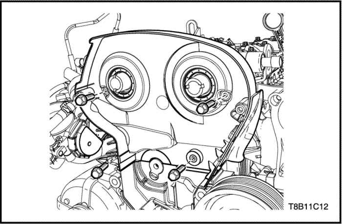

Culata y junta
Procedimiento de desmontaje
- Vacíe el refrigerante del motor. Consulte la Sección 1D, Sistema de refrigeración del motor.
- Libere la presión del combustible. Consulte la Sección 1F2, Controles del motor - 1.4 DOHC - G14D.
- Desmonte la correa de distribución. Consulte el apartado "Sistema de distribución" de esta sección.
- Desmonte el tensor de la correa de distribución. Consulte el apartado "Sistema de distribución" de esta sección.

- Desmonte el árbol de levas. Consulte el apartado "Árbol de levas"de esta sección.
- Desmonte la tapa trasera de la correa de distribución.
- Desmonte el colector de admisión. Consulte el apartado "Colector de admisión" de esta sección.
- Desmonte el colector de escape. Consulte el apartado “"Colector de escape" de esta sección.

- Desmonte el distribuidor de refrigerante. Consulte la Sección 1D, Sistema de refrigeración del motor.
- Quite los tornillos de la culata.
- Desmonte la culata con su junta.
procedimiento de montaje
- Monte la culata con la junta nueva.
- Coloque los tornillos de la culata.
Apretar
Apriete los tornillos de la culata hasta 25+90°+90°+90°+45° N•m (18,4+90°+90°+90°+45° lb-pie).
- Monte el distribuidor de refrigerante. Consulte la Sección 1D, Sistema de refrigeración del motor.
- Monte el colector de escape Consulte el apartado "Colector de escape" de esta sección.
- Monte el colector de admisión. Consulte el apartado “"Colector de admisión" de esta sección.
- Monte la tapa trasera de la correa de distribución.
Apretar
Apriete los tornillos de la tapa trasera de la correa de distribución hasta 6 N•m (53,1 lb-pulg.).
- Monte el árbol de levas. Consulte el apartado "Árbol de levas"de esta sección.
- Ajuste la distribución de la correa. Consulte el apartado "Ajuste del sistema de distribución" de esta sección.
Indicador de aceite y tubo
Procedimiento de desmontaje y montaje
- Retire el tornillo de fijación del tubo del indicador de aceite.
Apretar
Apriete el tornillo de fijación del tubo del indicador de aceite hasta 10 N•m (7,3 lb-pie).
- Desmonte el indicador de aceite y el tubo.
Cambio del aceite del motor y del filtro del aceite
Procedimiento de desmontaje
Precaución: No realice este procedimiento con el motor caliente. Puede provocar daños y accidentes.
- Levante el vehículo.
- Coloque el depósito para el aceite de motor debajo del tapón de drenaje del vehículo.
- Retire con cuidado el tapón de vaciado de aceite.
- Vacíe el aceite del motor.
Aviso: Si el tapón de vaciado está dañado, sustitúyalo por otro nuevo.
- Ponga el tapón de drenaje.
Apretar
Apriete el tapón de vaciado hasta 9 N•m (79,7 lb-pulg.).
- Quite el tapón del filtro de aceite.
- Desmonte el filtro del aceite.
procedimiento de montaje
Aviso: No reutilice el filtro de aceite del motor.
- Monte el filtro del aceite nuevo.
- Coloque el tapón del filtro del aceite.
Apretar
Apriete el tapón del filtro de aceite hasta 25 N•m (18,4 lb-pie).
Precaución: Consulte las especificaciones de aceite en el MANUAL DEL PROPIETARIO y rellene con el aceite motor recomendado.
- Abra el tapón de llenado de aceite.
- Añada el nuevo aceite del motor.
Refrigerador de aceite
Procedimiento de desmontaje
Precaución: No realice este procedimiento con el motor caliente. Puede provocar daños y accidentes.
- Vacíe el refrigerante del motor. Consulte la Sección 1D, Sistema de refrigeración del motor.
- Vacíe el aceite del motor. Consulte el apartado "Cambio de aceite del motor y del filtro" de esta sección.
- Desmonte el colector de escape. Consulte el apartado "Colector de escape" de esta sección.
- Retire los tornillos del tubo de refrigerante de la carcasa del distribuidor de refrigerante del motor (1).
- Retire los tornillos del tubo de refrigerante de la tapa delantera del motor (2).
- Retire los tornillos de fijación del refrigerador de aceite (3).
- Desmonte el intercambiador térmico con la junta.
procedimiento de montaje
Precaución: Compruebe si hay daños o fugas en las juntas del refrigerador de aceite. Si hay daños o fugas, sustituya la junta.
- Instale el intercambiador térmico con la junta en la carcasa del refrigerador de aceite.
Apretar
Apriete los tornillos del intercambiador térmico hasta 8 N•m (70,8 lb-pulg.).
- Inserte los tubos de refrigerante en la carcasa del refrigerador de aceite con la junta.
- Coloque los tornillos de fijación del refrigerador de aceite (3).
Apretar
Apriete los tornillos de fijación del refrigerador de aceite hasta 25 N•m (18,4 lb-pie).
- Coloque los tornillos del tubo de refrigerante en la tapa delantera del motor (2).
Apretar
Apriete los tornillos del tubo de refrigerante hasta 8 N•m (70,8 lb-pulg.).
- Coloque los tornillos del tubo de refrigerante en la carcasa del distribuidor de refrigerante del motor (1).
Apretar
Apriete los tornillos del tubo de refrigerante hasta 8 N•m (70,8 lb-pulg.).
- Desmonte el colector de escape. Consulte el apartado "Colector de escape" de esta sección.
Cárter de aceite
Herramientas necesarias
Extractor/instalador de tornillos del cárter EN-49152
Procedimiento de desmontaje
Precaución: No realice este procedimiento con el motor caliente. Puede provocar daños y accidentes.
- Vacíe el aceite del motor. Consulte el apartado "Cambio de aceite del motor y del filtro" de esta sección.
- Vacíe el aceite del motor.
- Desmonte el tubo de escape delantero. Consulte la Sección 1G, Sistema de escape del motor.

- Desmonte el soporte de fijación trasero de la transmisión (sólo transmisión automática).
- Quite los tornillos del cárter del aceite a la caja de cambios.

- Retire los tornillos del cárter de aceite utilizando un extractor/instalador de tornillos del cárter (EN-49152).

- Desmonte el silenciador del cárter del aceite.
- Desmonte filtro de aspiración de aceite.
procedimiento de montaje
- Desmonte el filtro de aspiración de aceite en el cárter de aceite.
- Desmonte el silenciador del cárter del aceite.
Apretar
Apriete los tornillos del silenciador del cárter del aceite hasta 10 N•m (7,3 lb-pie).
- Limpie la superficie de cierre del cárter del aceite.
- Aplique el sellante del cárter de aceite (LOCTITE 5900) en la superficie de cierre.
- Coloque los tornillos del cárter de aceite utilizando un extractor/instalador de tornillos del cárter (EN-49152).
Apretar
Apriete los tornillos del cárter del aceite hasta 14 N•m (10,3 lb-pie).
- Coloque los tornillos del cárter del aceite a la caja de cambios.
Apretar
Apriete los tornillos de fijación del cárter del aceite a la caja de cambios hasta 40 N•m (29,5 lb-pie).
- Monte el soporte de fijación trasero de la transmisión (sólo transmisión automática).
Apretar
Apriete la tuerca y los tornillos del soporte de fijación trasero de la transmisión hasta 80 N•m (59 lb-pie).
Válvula de descarga de presión del aceite
Procedimiento de desmontaje
- Desmonte el cárter del aceite. Consulte el apartado "Cárter del aceite" de esta sección.
- Retire el tapón de la válvula de descarga de presión del aceite.
- Desmonte el muelle de válvula.
- Desmonte el pistón de válvula.
procedimiento de montaje
- Limpie la rosca del tapón, el muelle y el pistón.
- Monte el pistón de válvula.
- Monte el muelle de válvula.
- Monte el tapón de la válvula de descarga de presion del aceite.
Apretar
Apriete el tapón de la válvula de descarga de presión de aceite hasta 21 N•m (15,5 lb-pie).
- Monte el cárter del aceite. Consulte el apartado "Cárter del aceite" de esta sección.
Válvula de descarga de sobrepresión del aceite
Procedimiento de desmontaje
- Desmonte el cárter del aceite. Consulte el apartado "Cárter del aceite" de esta sección.
- Retire el tapón de la válvula de descarga de sobrepresión del aceite.
- Desmonte el muelle de válvula.
- Desmonte el pistón de válvula.
procedimiento de montaje
- Limpie la rosca del tapón, el muelle y el pistón.
- Monte el pistón de válvula.
- Monte el muelle de válvula.
- Instale el tapón de la válvula de descarga de sobrepresión de aceite.
Apretar
Apriete el tapón de la válvula de descarga de presión de aceite hasta 10 N•m (88,5 lb-pulg.).
- Monte el cárter del aceite. Consulte el apartado "Cárter del aceite" de esta sección.
Bomba de aceite
Procedimiento de desmontaje
Precaución: No realice este procedimiento con el motor caliente. Puede provocar daños y accidentes.
- Vacíe el refrigerante del motor. Consulte la Sección 1D, Sistema de refrigeración del motor.
- Vacíe el aceite del motor. Consulte el apartado "Cambio de aceite del motor y del filtro" de esta sección.
- Desmonte el colector de escape. Consulte la Sección 1G, Sistema de escape del motor.
- Desmonte la correa de distribución. Consulte el apartado "Sistema de distribución" de esta sección.
- Desmonte el cárter del aceite. Consulte el apartado "Cárter del aceite" de esta sección.
- Retire la bomba de la dirección asistida y el soporte. Consulte la Sección 6B, Bomba de la dirección asistida.
- Desmonte el alternador. Consulte la sección 1E, Sistema eléctrico del motor.
- Desmonte el compresor del A/A. Consulte la Sección 7B, Sistema HVAC.
- Retire los tornillos del tubo (1) de refrigerante del motor.
- Retire el tornillo del soporte del tubo de refrigerante del motor (2) y presione el tubo en la carcasa del refrigerante de aceite.
- Desmonte el piñón del cigüeñal.
- Desmonte el conjunto de la tapa delantera del motor con la junta.

Inspección
- Limpie la superficie de medición.
- Mida la holgura axial de los rotores.
- Si está fuera de las especificaciones, sustituya por otro nuevo. Consulte el apartado "Especificaciones del motor" de esta sección.
procedimiento de montaje
Precaución: No vuelva a utilizar la junta de la tapa delantera del motor.
- Monte el conjunto de la tapa delantera del motor con la nueva junta.
Apretar
Apriete los tornillos del conjunto de la tapa delantera del motor hasta 20 N•m (14,7 lb-pie).
- Monte el piñón del cigüeñal.
- Coloque los tornillos del tubo (1) de refrigerante del motor.
- Coloque el tornillo del soporte del tubo de refrigerante del motor (2) y presione el tubo en la carcasa del refrigerante de aceite.
- Monte el compresor del A/A. Consulte la Sección 7B, Sistema HVAC.
- Monte el alternador. Consulte la sección 1E, Sistema eléctrico del motor.
- Instale la bomba de la dirección asistida y el soporte. Consulte la Sección 6B, Bomba de la dirección asistida.
- Monte el cárter del aceite. Consulte el apartado "Cárter del aceite" de esta sección.
- Desmonte la correa de distribución. Consulte el apartado "Sistema de distribución" de esta sección.
| © Copyright Chevrolet Europe. Reservados todos los derechos |